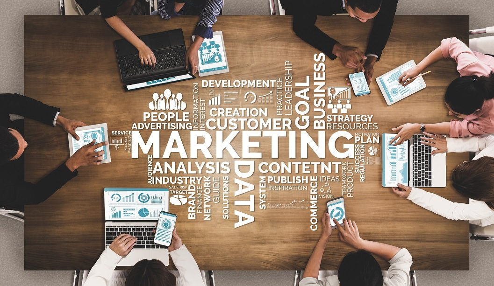

Digital marketing employs a variety of strategies to achieve a single, overriding target through multiple routes.
Consider digital marketing as a business where the tactics are the workers who serve in various divisions. Both workers work for the same company and have the same goal in mind: to make the company profitable.
Similarly, all digital marketing tactics work together to drive traffic, raise awareness, and convert leads into long-term consumers.
With that in mind, let’s get a little further into the seven big digital marketing strategies.
Search engine optimization (SEO)
When you need to know something or make an order, the first thing you do is look it up on Google. As the results are shown, most consumers can find what they are searching for on the first or second page of Google search. This is where search engine optimization (SEO) comes into play. One of the most critical moves in digital marketing is to make the website SEO-friendly. You will be left behind in the searches if you do not optimize your website to be Search Engine friendly, and you will miss out on future leads and publicity for your business.
Organic traffic to your website does take time, effort, and patience, so if you don’t want to pay to be on Google’s first list, SEO is the way to go. SEO is simple to set up and steadily raises the site’s traffic.

For your first website design, go for something simple.
This appears to be a no-brainer, doesn’t it? However, we can become too optimistic at times and become disappointed as a result. It’s a smart idea to start with something straightforward and enjoyable for your first project. Ecommerce sites are more complex and can be tackled until you’ve had more experience.
A blog is an excellent place to begin. It would be a useful programming practise, as you will gain knowledge of how a Content Management System (CMS) operates, which will be useful for future web designs. The best part is that you don’t have to start from the beginning. There are a number of blog templates available to make it simple to create one.
Look for ideas from other artists.
You’ve already come across websites that have impressed you with their style.
Make a list of your favourite websites in an inspiration document, or bookmark them as you go. You can search and pin sketches, book covers, posters, posts, and other forms of graphic work to link to on Pinterest. These sets are referred to as “mood boards” by designers. If you’re lost, use mood boards as a simple reference guide.
Prepare content before you begin.
Putting content first involves getting ready-to-use content until beginning to build the first website.

Brings together a large number of people.
Digital marketing reaches a large amount of people and has the ability to reach a new client every day. It allows you to connect with clients from all over the world, allowing you to catch more leads. Hiring a digital marketing firm is a wise decision if you are a startup venture. The marketing agency will assist you in increasing traffic and connecting visitors to your website so that they can become clients.
Addresses the needs of mobile users
We are now in a transition where smart phones are rapidly displacing notebooks and computers. Since the majority of people spend the majority of their time on their phones, it is critical to target smartphone consumers in order to increase brand awareness. And a digital marketing firm in Mumbai will assist you in accomplishing all of this with minimal effort.
Facilitates Customer Interaction
It used to be impossible for advertisers to engage customers in a dialogue. It took time and effort to find and interview potential customers. Digital marketing, on the other hand, has made it much easier for companies to receive reviews and adapt marketing and product promotions to the wishes and needs of their customers. So, if you want to increase brand loyalty and customer retention, make sure you and your social media agency have a daily two-way conversation with your clients.